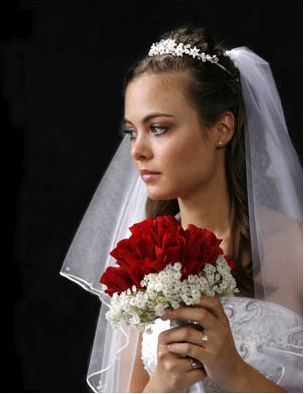
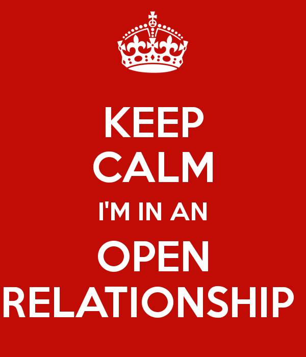

We’ve all heard stories about how husbands and boyfriends are blindsided by the revelation(s) of past sexual debaucherous escapades of their wives and girlfriends. We hear about the hurt, the shock, the pain, and the confusion that ensues when he finally realizes his snowflake wasn’t who he thought she was. At some point we hear the crestfallen schlub say “How could she not tell me?”
She did. She just didn’t tell you the whole story. She’s been telling you half-truths. Or as she’ll tell her friends, “little white lies.” Rather than get into mental gymnastics or complicated explanations I’ll use a quick example:
You’re on a date with a woman who tells you her husband cheated on her so she filed for divorce. Is it plausible he cheated on her for no reason which caused her to up and leave? Sure. Nothing’s impossible. But here’s a better question: Is it likely?
In 2016, not a chance. Odds are she cheated first, stopped having sex with him, and when he finally had the stones to step out on her she finally had her reason to cut him loose (if he even cheated at all which, conveniently for her, there’s no real way to verify). The story she gave you was only partially true.
All women do this on some level to give themselves an escape hatch lest their husbands and boyfriends learn the entire story and call her out on it:
You: “You lied to me! You didn’t tell me you cheated too!”
Her: “I didn’t lie to you. I told you he cheated so I divorced him. That was the truth.”
See how that works?

“You’re the first guy I’ve ever had anal sex with”
Over the years I’ve heard dozens of lies like this. There are different variations and degrees to be sure, but I continuously hear the same ones over and over. That said, I’m going to give you the five most common untruths females tell, what she’s trying to convey, what it likely means, the escape technique she’ll use if you learn the truth, and the follow up question to avoid getting got in the first place.
Let’s get to it.
5. “I haven’t been in a relationship in over a year”

What she’s trying to convey: She wants you to believe two things: 1) That because she hasn’t been in a relationship in a while, she hasn’t had sex in a while which leads to 2) She doesn’t have sex unless she’s in a relationship.
What it likely means: She’s been hooking up and doing one-night stands with randoms by the truckload.
Escape technique: “I told you I hadn’t been in a relationship. I never said I hadn’t hooked up with anybody or went out on dates. There’s a difference.” Then when you angrily ask:
“Why didn’t you tell me?!”
She’ll simply reply:
“You never asked.”
You can be as pissed off as you want to be but guess what player…she’s right. Being in a relationship is different from going out on dates or hooking up with random dudes. But she didn’t want to tell you the other half the story so she told you the half she wanted you to hear.
“You never asked if I’ve ever had a train run on me”
Follow up question: “So you haven’t been out on a single date or even hooked up with anybody?? :::pause::: for an entire year??”
Ask that question with a confused, yet skeptical look on your face to a girl who tells this particular half-truth and you’ve essentially checkmated her. She can’t answer no because she’ll think you’re thinking “What’s wrong with this chick if not a single guy has taken her out or even fucked her in a year?” (Because that’s what she would think if you told her the same thing.)
If she answers yes, she’s knows she has some ‘splainin to do. Either way, she knows you’re not gullible which will make her think twice about lying to you down the road.
If you choose not ask the follow up question and take her at her word, then find out she was the town bicycle during the time she lead you to believe she was wearing a chastity belt then that’s your fault. Never believe what a woman tells you. Ever.
4. “I just came out of a bad relationship”
What she’s trying to convey: The reason for her relationship coming to an end was her boyfriend or husband’s fault. Women know the phrase “bad relationship” implies physical or emotional abuse or infidelity (to gullible betas anyway) without actually having to say it out loud.
What it likely means: The relationship was “bad” because her ex failed too many shit tests, put her on a pedestal, and eventually became unattractive to her.
Escape technique: If you find out she was banging her baby daddy on the side, this is where she’ll actually tell you her ex physically abused her and called her names. Whether or not it’s true is irrelevant. You have no way of knowing for sure and she knows this so she’ll tell you whatever story she wants.

“Then he yelled at me and called me names. It was horrible!”
As far as girls are concerned any relationship they leave is a “bad relationship.” They’ll tell you and themselves whatever they have to to justify the bad behavior you find out about
Follow up question: “What happened?”
This simple question, again, pins her in a corner. Not only does she have to explain her situation in a way that completely absolves her of all responsibility, she has to do it on the fly. Women rarely expect you to ask them anything after they play the ace of spades known as the “just came out of a bad relationship card.” She assumed you’d just take her word for it.
Now if she’s a pro (and a lot of them are) she’ll give you the “I don’t want to talk about it” which ends the conversation. But, again, in the back of her mind she might think you won’t take whatever she says at face value. Besides, women can’t help but tell on themselves. At some point she’ll inadvertently start to trickle out the real story at which point you’ll have a better understanding of what really happened.
If she really has been in an abusive relationship, you know it’s only a matter of time before she goes running back to him or starts sleeping with him behind your back if you’re stupid enough to commit to her. Your only move in this scenario is to have fun with her for a few days and cut her loose.
3. “I have never cheated”
“I’ll just dump him, have my fun tonight, then call him crying tomorrow and beg him to take me back”
What she’s trying to convey: That she is a faithful woman.
What it likely means: She hasn’t cheated… well not technically. She broke up with her boyfriend via text while out on a date from a dude she met on Tinder. Ten minutes in she knew she’d sleep with him that night but because she wants to have her cake and eat it too, she sent the breakup text fully intending on getting back with him after she’s had her fill of her new guy.
Escape technique: Now you’re confused because she just told you about a guy she hooked up with during her time with her ex boyfriend:
You: “Wait a minute….you said you never cheated.”
Her: “I haven’t.”
You: “But you hooked up with so-and-so while you were with so-and-so.”
Her: “We broke up for a couple days then got back together. It’s not cheating if we’re not together.”
Damn, bitches are sneaky aren’t they? Once again she’s right. She dumped him so technically she was free to do whatever she wanted with whomever she wanted. To get to the bottom of this untruth before the confrontation….
Follow up question: “Ever get back with an ex after hooking up with other people?”
This query cuts cuts right to the heart of the issue without putting her on the spot. On its face, it seems like a harmless question which keeps her guard down. If she has ever pulled the ‘breakup to cheat then get back together the next day’ trick, she’ll probably answer yes without hesitation because she thinks you’re unaware of this 24 hour alpha fux-beta bux trick females have been pulling for quite a while.
2. “I got married young”
What she’s trying to convey: That because she was young when she tied the knot, her notch count was low.
What it likely means: She either got knocked up and walked down the aisle to avoid having a bastard kid, or she saw The Wall approaching quicker than she expected as a result of sleeping with exorbitant amounts of men and locked a man down before her looks started to fade prematurely. Whatever the reason, it’s not because she was a virtuous, traditional woman who didn’t want to waste her fertile years riding the carousel.
Escape technique: So you foolishly ask her how many men she’s slept with (as every blue pill boyfriend or husband does at some point) and you’re shocked when she tells you 32 (which probably puts the real number closer to triple digits).

It’s all fun and games until you find out your 21 year old wife has slept with 21 guys…..since high school
Her: “Why is that so surprising to you?”
You: “You said you got married when you were twenty!”
Her: “I did but that doesn’t mean I didn’t have a little fun during my teens.”
Any time a female refers to anything as “a little” it usually means a lot… a whole lot. Especially when it comes to sex. Girls in their mid-twenties will often use this half truth to give men the impression that she’s a good woman who believes in the sanctity of marriage and proved it by marrying young. But girls are losing their virginity and much younger ages so by the time they’re out of high school, their notch count has long since been out of control.
To cut through this attempt at snowflaking, drop this on her:
Follow up question: “Well I’m sure you had a few boyfriends, though didn’t you?”
This, again, keeps her guard down. Every teenage girl has boyfriends so she’ll have no problem answering truthfully which is “yes.” After that ask her: “How many?”
Now this is a little more direct, but her guard is still down. In her mind, having sex with her boyfriend was normal and certainly didn’t make her a slut because every girl has sex with her boyfriend.
Whatever number she gives you multiply it by 7. That is, if she tells you she had 3 boyfriends before she graduated from high school, her notch count before she tied the knot is somewhere north of 20.
1. “I was in an open relationship/marriage”
What she’s trying to convey: She’s had sex outside of her relationship but her boyfriend or husband was aware of it and was okay with it because he was doing the same.
What it probably means: She cheated, got caught, promised it wouldn’t happen again, got caught again, proposed an “open relationship” giving him permission to sleep with other women so she could feel better about sleeping with other men and he accepted.
Escape technique: None needed. The moment you accept her “open relationship” explanation, calling her out on slutty behavior is useless. After all, she was in an “open relationship” which gave her carte blanche to sleep with whoever she wanted.

Translation: Keep calm. I cheat on my boyfriend all the time.
Follow up question: “Did he sleep with other women?”
This is easily the most effective follow up question and literally puts her in a no win situation. If she answers yes, she’s indirectly admitting she wasn’t sexually appealing enough for him to want to have sex with her and only her. If she answers no, her arrangement turns from an open relationship to her cheating on her boyfriend or husband all the time. Regardless of whether or not she had his blessing, she knows this makes her look like a slut.
I’ve heard this from more women than I can count and when I laugh in a way that says in no uncertain terms that I know there’s more to the story than just an “open relationship” the hamstering goes into overdrive. “He was there when he fucked me,” “I set him up with a female after I had my fun,” and “He said it was a turn on that I slept with other men” are all things I have heard with my own ears.
The bottom line here is that any female who says she’s been in an open relationship is just another slutty female. Characterizing it as an open relationship is just one of many ways they can talk about their infidelity without actually calling it cheating.
The bottom line is…
…women never tell you the whole story. Especially when it comes to their sexual pasts. They’ll never tell say “Our relationship didn’t work out because I slept around” or “Yeah, I fucked a lotta guys when I was single.” Deep down, they know what slutty behavior is which is why they hide it in the first place.
There are many, many more half truths women like to tell to make themselves look better than they really are. Though they’re all different in terms of context, timing, and purpose one thing remains a constant: Always ask a follow up question to get more of the story.

The look of a woman who has it all: A husband and a boyfriend.
Letting her get away with blanket statements like the ones above without probing for more information then indicating to her that you’re buying the bullshit she’s selling will end the relationship before it starts. She will have lost respect for you and it’s all down hill from there.
At that point it’s only a matter of time before she’s telling her next beau she just got out of a “bad relationship” with you.
Read More: 6 Slut Tells Every Man Needs To Be Aware Of